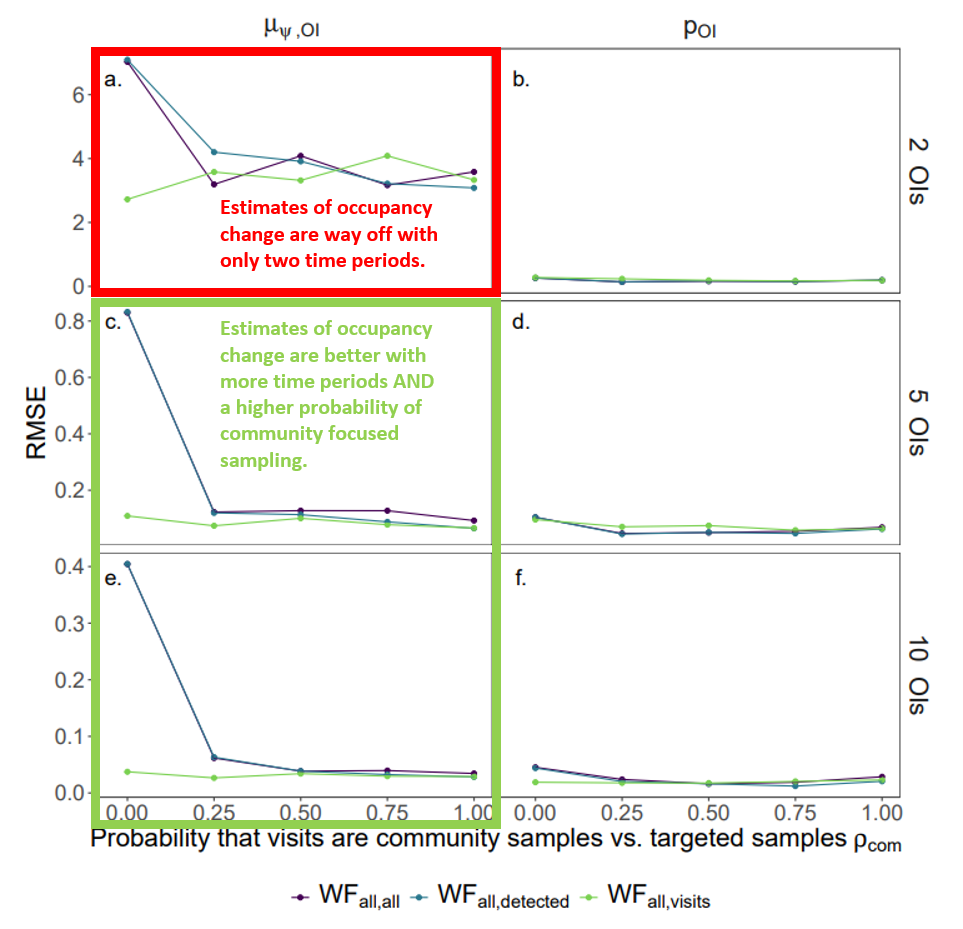

Scale-dependent changes in high-latitude North American butterfly occupancy over the last 50 years.
Global climate change has and is projected to occur most dramatically in high-latitude regions of the planet. Yet, despite this magnitude of change, most regions are critically undersurveyed for their insect fauna, even for butterflies. My third chapter research focused on how to use what data we have available (usually from natural history museums and community science platforms) to reconstruct trends in butterfly occupancy over the last 50 years.
The road to accomplishing this was a long one. I originally set out to use the occupancy-detection modeling framework in Spring 2020 just as the pandemic was picking up speed in the United States. After some conversations, it became apparent that a simulation study was needed to validate the use of natural history museum data for this purpose. We did just that with awesome collaborators at UBC, SFU, and USC (you can read about that in this blog post). Long story short, you can (provided you meet some baseline requirements)!
With the simulation study in my back-pocket, I scrambled to re-run my occupancy-detection models - looking specifically at how rising minimum temperatures and increasing precipitation may be impacting some 120+ butterfly species across much of Canada and Alaska. Turns out that rising minimum temperatures have a noticable impact on butterfly occupancy (depending on if a given species is more cold- or warm-adapted). Species trends in our time-covariate model also adhere to this general idea with cold-adapted species generally exhibiting declines in occupancy probability across their range.
This manuscript is current in review, so stay tuned for updates.

